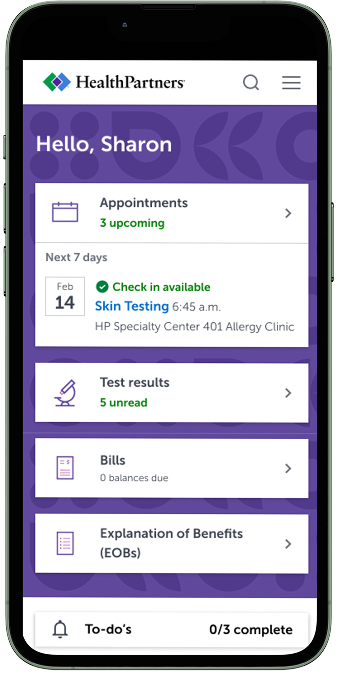
Health Partners members and member patients have access to the authenticated experience where they can accomplish key tasks. The business has noticed the click-through rate on the campaign cards is low and the assumption is that users don't feel that the offerings presented are personalized to them.
Shown below is the current layout of the desktop and mobile version of the My Dashboard page. Users have told us that they find the Appointments, Test Results and Bills cards useful but they don't engage with the program cards as often (large cards) because the cards come across as generic. Users have also indicated that they'd like this page to feel more personalized.
Desktop
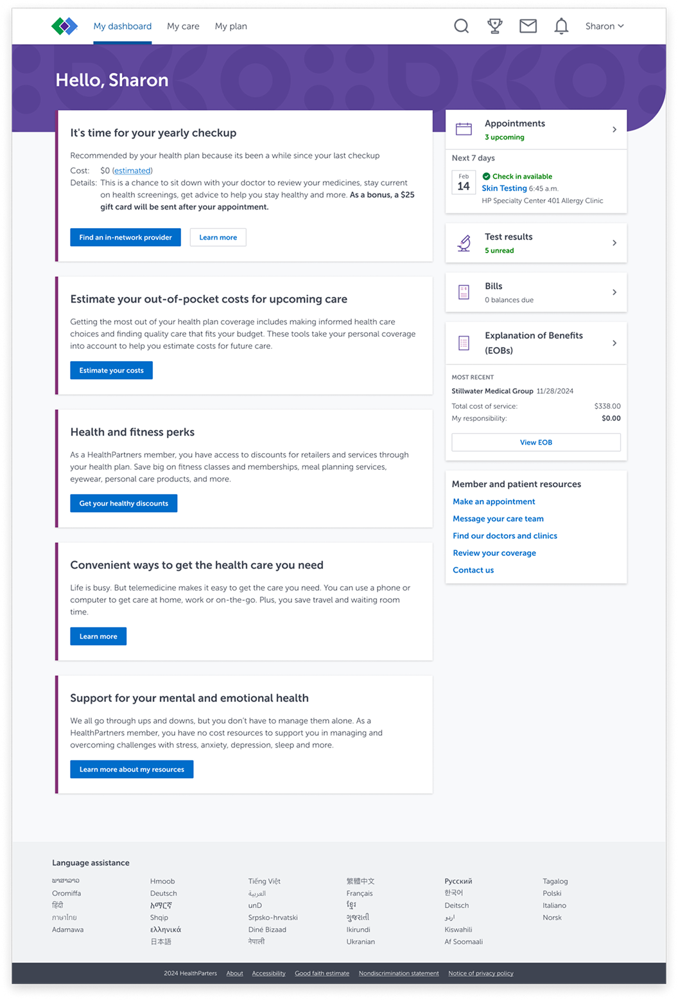
Mobile
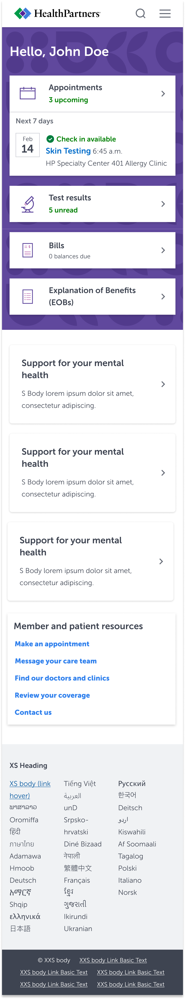
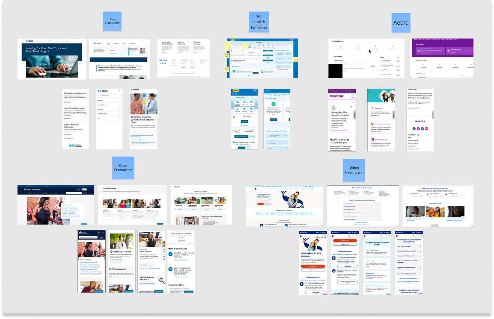
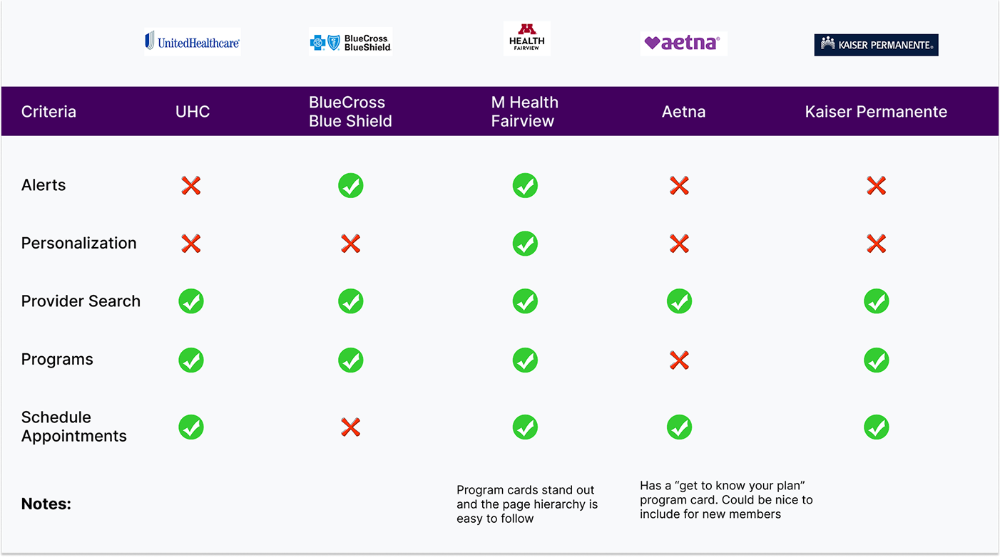
From analyzing these competitors, there's an opportunity to rework the card hierarchy on the page, update the copy to feel more personalized and change the page layout so that it shows a proper dashboard where users can see vital information and take actions that will improve their overall health and well-being.
I started drawing some ideation sketches of what an updated My Dashboard page could look like on mobile. I made three different options that focused on making the information presented more personalized for users based on their health needs. I'm also thinking about ways to include shortcuts to commonly visited pages in the authenticated experience.
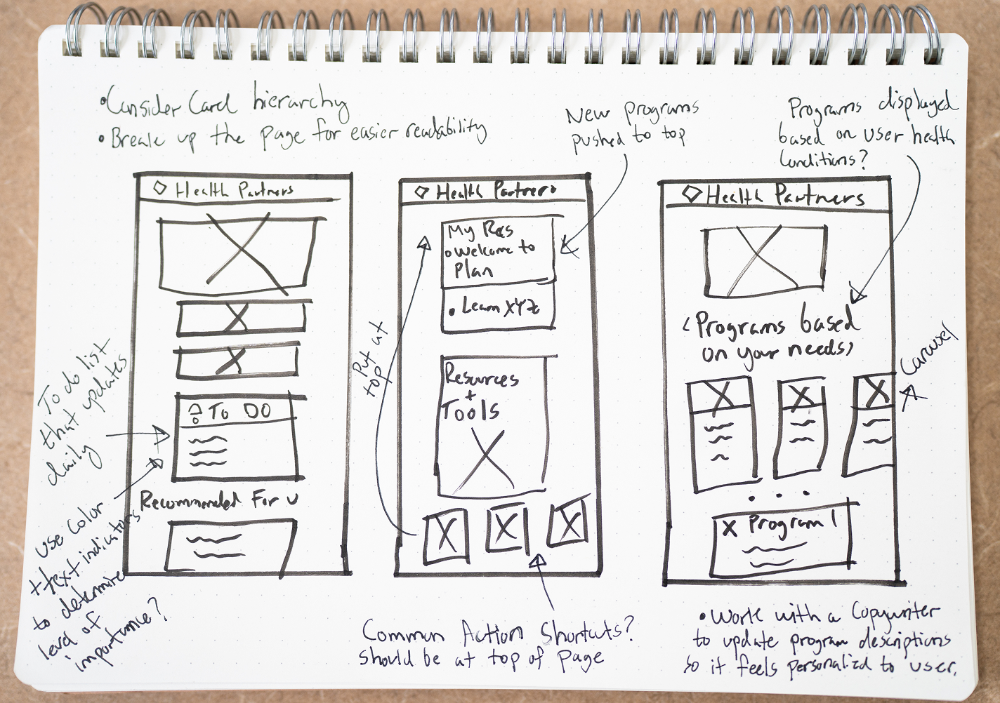
I then translated my sketches into my first set of low fidelity wireframes and presented it to stakeholders and other designers on my team. I took their feedback and implemented it into the high fidelity designs.
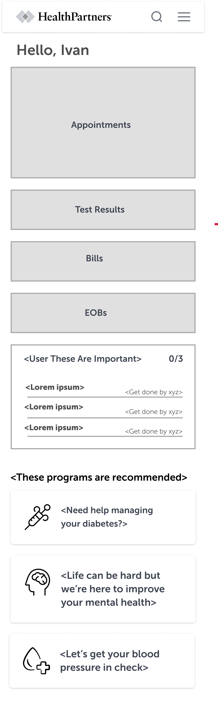
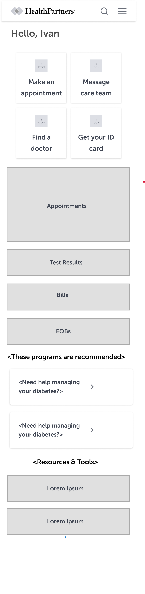
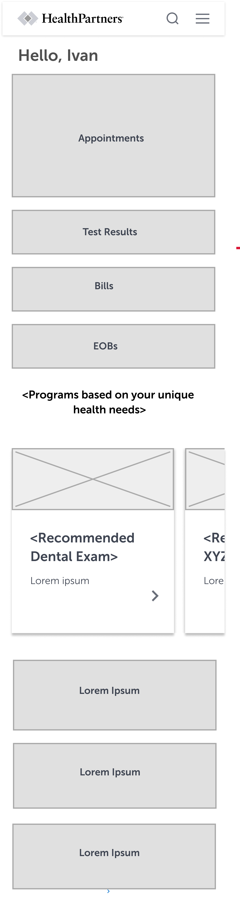
Here are high fidelity wireframes that were going to be used in future moderated usability tests. Due to financial reasons this project was paused indefinitely and I was not able to conduct user testing.
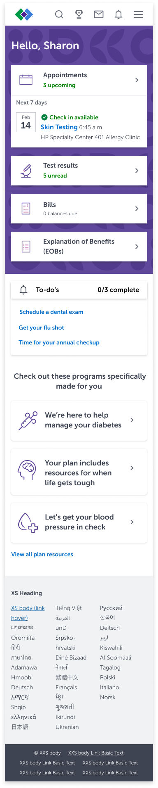
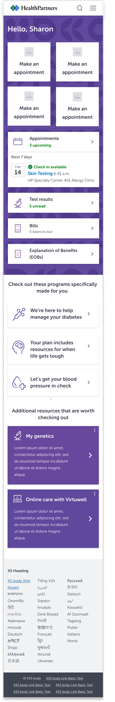
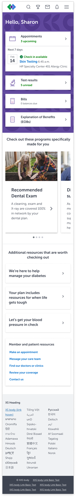
I think moderated usability studies with both Health Partners members and non-members would provide me with the necessary feedback to arrive at a final design. I'd love to continue working with a copywriter to make sure that the language in this design drives home the fact that the offerings on this page are tailored specifically for that user. Once the final design goes live I'd like to give it 2-4 weeks before we check the click-through analytics on programs and make adjustments if needed.
My biggest takeaway from this project is the importance of demonstrating empathy in healthcare UI. The reason I say this is because when people normally deal with health care or health insurance it's typically under difficult or negative circumstances so being able to create meaningful designs helps reduce the stress associated with getting help. I love when technology acts as a bridge to hope and healing.